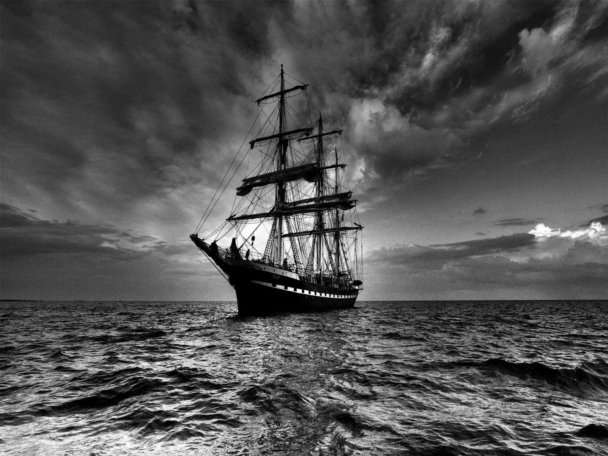

On December 5th, 1872, the crew of the Dei Gratia
discovered the Mary Celeste, abandoned, 400 miles
from the Azores. The ship had left for Genoa, Italy
several days earlier but would never reach its
destination. The captain of the Dei Gratia,
David Morehouse, ordered his crew aboard to further
investigate the situation. Once aboard, Morehouse's
crew discovered that the Mary Celeste was
completely abandoned, not only but its crew but also
by the captain, Spooner Briggs, his wife Sarah, and
their young daughter, two year old Sophia. It
appeared that the inhabitants of the ship had left
in a hurry, leaving their belongings behind. Several
feet of water was left standing at the bottom of the
ship, and the crew had disassembled one of the two
pumps. The single lifeboat that the Mary Celeste
had been equipped with was nowhere to be found.
Since there was no obvious reason for the ship to have
been abandoned, the crew of the De Gratia speculated;
could it have been water spouts? Pirates? Mutiny?
Or even sea monsters? Others speculated that the De Gratia
crew may have been repsponsible for the disappearance of those
aboard the Mary Celeste. Despite plenty of research
and speculation in all the years since the discovery of the
abandoned ship, the mystery of the Mary Celeste remains unsolved.
